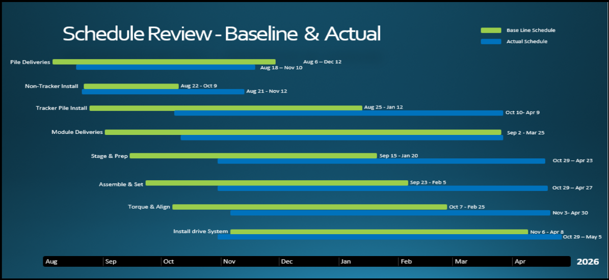
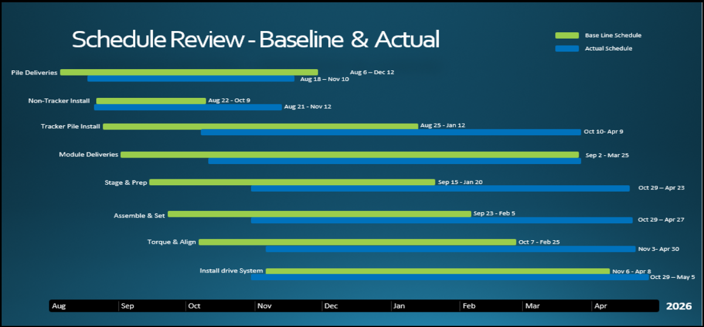

Easely I
55133
Click to add Easely I schedule image
assets/images/sched_e1.png

The following schedule compares the target dates to the actual historical date for task completion; factors such as permitting, pile delays and EOR errors significantly pushing the schedule out.
| Task | Baseline Start | Baseline End | Actual Start | Actual End | Slip |
|---|---|---|---|---|---|
| Pile Deliveries | Aug 6 | Dec 12 | Aug 13 | Nov 10 | +1 wk start |
| Non-Tracker Install | Aug 22 | Oct 9 | Aug 21 | Nov 12 | ~5 wk overrun |
| Tracker Pile Install | Aug 15 | Jan 12 | Oct 3 | Apr 9 | ~7 wk start slip |
| Module Deliveries | Sep 2 | Mar 25 | Sep 2 | Mar 25 | On Schedule |
| Stage & Prep | Sep 12 | Jan 20 | Oct 25 | Apr 25 | ~6 wk slip |
| Assemble & Set | Sep 25 | Feb 5 | Oct 20 | Apr 27 | ~7 wk slip |
| Torque & Align | Oct 7 | Feb 25 | Nov 5 | Apr 30 | ~9 wk slip |
| Install Drive Systems | Nov 5 | Apr 8 | Oct 20 | May 5 | ~4 wk overrun |
Key Delay Drivers:
Gerdau Pile Delay — 2 Weeks Late (8/18)
EOR Design Errors — Tracker Pile Realignment
Permitting — Zone Access Restrictions
UXO Holds — Zones 8/11/12/13
Easely II
55134
Click to add Easely II schedule image
assets/images/sched_e2.png

The following schedule compares the target dates to the actual historical date for task completion; factors such as permitting, pile delays and EOR errors significantly pushing the schedule out.
| Task | Baseline Start | Baseline End | Actual Start | Actual End | Slip |
|---|---|---|---|---|---|
| Pile Deliveries | Aug 4 | Dec 17 | Aug 18 | Dec 17 | ~2 wk start slip |
| Non-Tracker Install | Aug 15 | Oct 9 | Aug 21 | Nov 14 | ~5 wk overrun |
| Tracker Pile Install | Aug 25 | Jan 12 | Oct 10 | Apr 9 | ~6 wk start slip |
| Module Deliveries | Sep 2 | Mar 25 | Sep 2 | Mar 25 | On Schedule |
| Stage & Prep | Sep 12 | Jan 20 | Oct 26 | Apr 22 | ~6 wk slip |
| Assemble & Set | Sep 22 | Feb 5 | Oct 25 | Apr 27 | ~7 wk slip |
| Torque & Align | Oct 7 | Feb 25 | Nov 3 | Apr 30 | ~9 wk slip |
| Install Drive Systems | Nov 5 | Apr 8 | Oct 20 | May 5 | ~4 wk overrun |
Key Delay Drivers:
Gerdau Pile Delay — 2 Weeks Late (8/18)
EOR Design Errors — Tracker Pile Realignment
Permitting — Zone Access Restrictions
UXO Holds — Zones 1, J, Hutnil